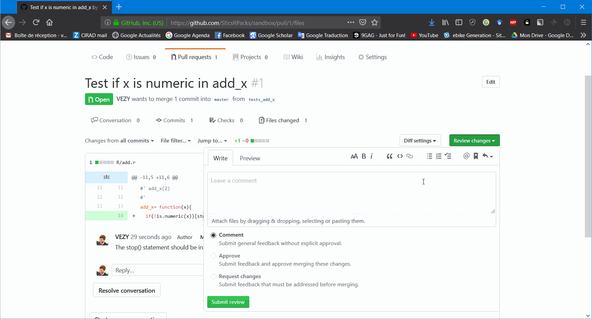
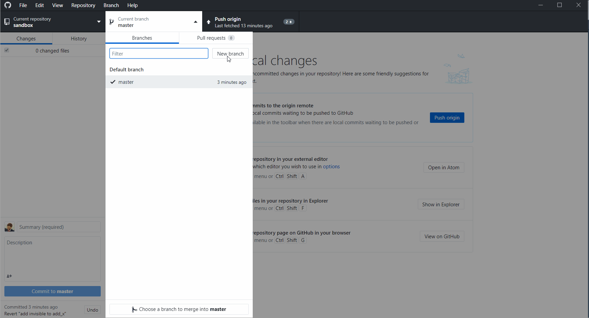

Welcome !
If you are a newcomer in the SticsRPacks community, this repository is for you. It was specifically created to help new people to learn the basis of all tools used in the project.
The first thing to learn in this tutorial is how to use GIT and GITHUB.
GIT and GITHUB
GIT is a software designed for efficient version control. It helps you and your collaborators develop better softwares. With GIT, you can save “snapshots” of your work at any moment, and return to a previous state whenever you want. GIT has much more to offer, but this is out of the scope of this introduction.
GIT basis
You’ll need some basis on GIT before training on this repository. A first reading that is well adapted to our example is the book of Hadley Wickham. It explains well the basis of GIT in conjunction with R. There are also several tutorials on the internet for begginers:
- learngitbranching
- Git Gud, web based simulator
- Udacity free MOOC
- Github tutorial
- openclassrooms course (in french only).
A good way to start is also to read the GIT book, that is made for everybody from beginners to advanced users.
Clone the sandbox repo
The next step after learning GIT is to use this example. To do so, follow these simple steps:
- Download GIT and install it.
- Download and install Github desktop, for Windows or Mac, an app that will help you use GIT. For linux, you can install for example GitAhead.
- Create an account on Github.
- Open Github desktop, and set your personal informations to connect to your
Github.comaccount. - On Github desktop, go to
File, clone repository, or pressctrl+shift+O. And then click onURL, and enter this address:
Then, choose where the repository will be cloned (copied) into your computer.
People that already are members of the SticsRPacks organisation may find the repository directly in the “Github.com” tab.
Congratulations, you just cloned the sandbox repository onto you computer! Now you can see all files in your computer by opening the corresponding folder (ctrl+shift+F).
R package format
An R package needs several mandatory files and folders:
-
DESCRIPTION: this file describes the package (name, authors…) -
NAMESPACE: this file lists the functions -
Rfolder: the folder that contains all R code -
manfolder: the folder that contains all the help pages of the package -
.Rbuildignore: the file that tells R which files are excluded from the package build
And some are not mandatory but helpful:
-
LICENSE: the license under which the project is developed on. -
README.Rmd: A text file that explains the project to humans using the Rmarkdown format. When knited, this file produces theREADME.mdfile that is rendered by Github on the main page. This very page is aREADME.mdpage that is rendered by Github, and that was created using aREADME.Rmdfile. -
README.md: the file rendered by Github in the main page of the repository and that aims at explaining the project objectives. -
.gitignore: the file that tells GIT which files to ignore.
Most of these files are automatically generated using specific tools that are described further.
Package example
Before doing this tutorial, you need to:
- Download and install RStudio
- Download and install R
- Download and install the tools to build the package:
- Rtools if you have a windows machine
-
XCodefrom the AppStore if you have a mac -
r-base-devon linux
- Use this command line on R to download these packages:
Open the Rstudio project
Double-click on the sandbox.Rproj file. It will open the Rstudio project. The .Rproj file contains informations about the project for RStudio (e.g. it is an R package, it uses devtools, etc…).

Open RStudio Project
From the Files window, open the R folder. You will find here all the R scripts used for the package.
Simple function
It is highly encouraged to put each function in a separate file, unless they are very short and can be grouped under a common file with a title that describes well their purpose.
Click on the add.r file. This file contains one function: add_x(). This function simply adds the input to itself. You can see that it is preceded by some text formatted as follows: #' Text. This text is a Roxygen documentation. It is formated on a special way that helps R generate the package documentation.
Documentation
The help pages of each function in a R package are generated by roxygen2. To learn more about function documentation read this vignette, and to learn more about the format of the documentation read this vignette and this one.
Markdown can be used optionally in Roxygen documentation. To use it, execute the following line once:
Build the package
Now that you have the package on your computer, you can build the documentation for all your functions by pressing ctrl+shift+D, or by going on the Build tab on the upper-right and by clicking on More>Document. This uses Roxygen to build the help pages from the documentation you write above your functions. The help pages are written in .Rd files on the man folder of the package. Do not edit these files manually.
You can finally build and install your package by going on the Build tab on the upper-right, and by clicking on the Install and Restart button (or press ctrl+shift+B). This step build the package into your computer.
Now execute this command to access the help page of the function:
The help page of the function should pop-up.
Add a function
Create a new R script file, add the following code and save it:
New function
This function divides x by y and return the result.
To add some documentation to your function, place your cursor into the function, click on the magic wand just above your script and choose Insert Roxygen Skeleton, or press ctrl+shift+alt+R. This will create a dummy Roxygen documentation above your function using the arguments of your function.

Add roxygen
Your function should look like this now:
#' Title
#'
#' @param x
#' @param y
#'
#' @return
#' @export
#'
#' @examples
div_x= function(x,y){
x/y
}Fill the documentation, and add some new keywords such as a description:
#' Divide
#'
#' @description Divide x by y
#'
#' @param x The numerator
#' @param y The denominator
#'
#' @return x/y
#' @export
#'
#' @examples
#' div_x(1,2)
div_x= function(x,y){
x/y
}Then re-build your documentation (ctrl+shift+D), and re-build your package (ctrl+shift+B).

Document and build
You should have access to your own function help page:
Test your functions
After writing a new function or modifying one, it is important to test it. This step is mandatory, because some other functions may call this very function you just wrote, and it becomes more and more difficult to know where bugs are located when none of the functions were thoroughly tested. There are two steps to test a function. The first one is to test it by yourself when designing it, and the other one is by adding automatic tests.
Manually
When coding a function, you should always test if each line of code in your function is returning the expected result, and if the function returns the correct output after execution.
It is good practice to maintain your R package as light as possible by keeping the data outside of it whenever possible. Creating an independent R project for tests helps you to keep the external data or executables and the created outputs outside of the package project. To do so, you can create a separate Rstudio project where you will test your package: go to File>New Project>New Directory>New Project, type your project name and choose where it will be located on your computer. The project name is usually taken as the R package name followed by “test”, such as SticsOnR_test. This step is not mandatory but strongly advised.
After creating the new project, add a new R script (ctrl+shift+N), load your R package such as:
And test your function by giving different inputs and checking the function outputs.
Automatically
Manual tests are a good first step to evaluate a function, but developers tend to test their functions once only, and to skip the tests when making a small change. This methodology can make the code break for everybody when something is changed but not tested, which is not desirable.
To avoid these difficulties, it is strongly advised to use automatic tests, also called unit tests. These tests are written once, and executed each time the code of the package is pushed to github.com, or every time the developer needs to. These tests are implemented by using the testthat package. All documentation is available on the package website.
To add unit tests to our example function (or to a set of functions), run this command:

Add tests
If you add tests on your package for the first time, the usethis::use_test() command will create all the infrastructure you need, if not, it will just create a new test script to your tests.
Now a new folder appeared in our project: tests, which contains two things:
A subfolder called
testthatthat contains all tests scripts you created.An R script called
testthat.R. This script will call all tests in the R scripts located intestthat. Do not mind this script, you will probably never have to modify it.
If you executed the previous command, you should have a unit test script called test-add.R in this directory with the following code:
This test is an example that tests if 2 * 2 is equal to 4. Change the code to the following to test our function:
This code tests that div_x(1,2) returns 0.5. To run the test, go to the Build tab, and choose Test Package, or press ctrl+shift+T. The tests will all be executed, and a report will appear on the Build tab at the end, showing which tests were successfull, and which failed or returned warnings.

Run tests
You should add different tests for each of your functions, to check if they work correctly, and if they handle errors properly.
More details about unit tests with testthat are given here.
CRAN tests
The devtools package that you installed previously adds also the tests that CRAN do on all packages. These tests consists on checking that all mandatory files are present, that functions are well documented, etc… It is very important to check the package regularly for errors so the users can download a functionning package. To start a CRAN check, go to the Build tab, press the More button, and choose Check Package, or simply use ctrl+shift+E. The package will be checked, and a report will be given at the end.

CRAN checks
Make a website
A website can be automatically generated from the helpfiles of the R package, the vignettes and the README.md file by using the pkgdown package. For example the auto-generated website for the SticsOnR package is available here.
To set up the website, simply execute the following code each time you update the package:
Build site
When first called, the function creates a new folder called docs where it puts all the html files for the website. When pushed to github.com, a website is created from these files if you authorized github pages.
To authorize github pages, go to the project page on the repository, then go to settings>Github Pages>Source and then choose master branch /docs folder.
The website will be at an address of the form (https://sticsrpacks.github.io/{packagename}/), for example our project is rendered at this adress: https://sticsrpacks.github.io/sandbox/
Share your changes using GIT/GITHUB
Branches
For the sake of simplicity, we only used the master branch of the repository in the previous example. The downside of using only this branch is that each time a user will change the code while you change it also, it will override the others code. To avoid this behavior, GIT has a nice feature called branches. A branch can be thought as a copy of your project at a given time, that have a parallel history to the master branch. In other words, it allows you to develop some code while not bothering the others.
To ensure that developers use branches, all the master branches of the SticsRPacks repositories will be protected against commits, and must have at least one reviewer. See this page for more details on how to set those rules.
To make modifications to the code, you can create your own branch using Github desktop. Usually, we name a branch after the feature it is supposed to add. You can make a new branch for each independent feature you want to use. To create a new branch, simply follow the steps showed below:

New branch
Make your changes
You can then freely work on your code without making any changes to the master branch. For instance, we can add some tests inside the add_x function to test if the input x is numeric before computing the addition:

Add code
Commit
Each time you modify the package, you should commit your changes to GIT. It is good practice to commit whenever a little step has been reached so the commit message is short enough but still explains everything you did. This methodology make more commits, but is still preferred because it is easier to find changes in the history earlier. So do not hesitates to split your work into little commits.
To commit your changes, open Github desktop and choose the repository. The files that were modified in the repository appear in the left-most window, and the associated code that was added or removed should appear in the window on the right. The code in green was added, and the code in red was removed. To commit those changes, enter a commit message in the left window next to your account image, where it is written Summary (required). The message should be concise but should describe all the changes. Then press Commit to master. Your changes are commited to the master branch and saved on your computer.
Commit
Push
Whenever your work is done, or you go for lunch, you should push all your commits to github.com. To do so, just press the Push origin button in the center or in the upper window. Github desktop will send the changes to github.com, and they should appear in the repository.
If you just created your branch, you have to publish it Github.com before:

Publish branch
Pull request
Whenever you finished the modifications you wanted to do with your branch, you can make a pull request. This is a way of asking other contributors for their approval of your changes before merging your code to the master branch:

You’ll have several steps to complete after:
- give a general title to your pull request, for example here it is named after the last commit: “Test if x is numeric in add_x”
- add a little description of the changes
- check if the merge is automatic or not (is there any conflicts ?)
- wait for the automatic tests to run, and if they are successfull:
- assign a reviewer if possible
Ask review
- and finally create the pull request.
Review
As a reviewer, you’ll have to open the pull request (in the Pull requests tab), and review the code in the “Files changed” sub-tab:

Review
If there are some changes needed before merging the code to the master branch, you can leave a comment (and even propose some code) right where the changes are needed.
Then, the person that did pull the request will have to integrate those proposed changes into its own branch, commit the changes, and update the pull request.
Then, the reviewer will review the code again, and can finally accept the pull request:  When the pull request is accepted, it can finally be merged into the master branch:

Merge
This step will add all the commits from the branch to the master branch. A cleaner option is to use the Squash and merge option, which will combine all commits from the branch into one commit only. This option may be cleaner to avoid too many unnecessary commits in the master branch.
You can optionally delete the branch after merging it to make a cleaner repository.
Note that the previous step can be made all at once by the reviewer (accept and merge).
Update
Once the merge is done, all users can update their local repository with the new code. If the branch was deleted from Github.com, it will still remain on the local copy of the user, so you will have to delete it manually using Github desktop:

Update repository
Conflicts
A pull request may modify some code that was also modified by another user that pulled his changes before you in the master branch. In that case, GIT cannot know which code is the right one, or if there is a need of more code to integrate both changes, so a manual choice has to be made.
Here is an example of a conflict in two steps:
Making different modifications on two different branches: 
Trying to merge the branches and resolving the conflicts using Atom:

Resolve conflict
This is an example made on the local repository, but a pull request would yield the same result.
Here is an example with a pull request from a branch:

Resolve pull request conflict
As you can see, this pull request cannot be automatically merged, so you have to resolve the conflicts from your computer, or you can even use the web editor if you prefer:

Merge pull request after resolved conflict
Install
New users can now install your package directly from the Github repository using this command line:
# install.packages("remotes")
remotes::install_github("SticsRPacks/sandbox")
# Or using devtools if already installed:
devtools::install_github("SticsRPacks/sandbox")
Install package
Badges, CI and code coverage
Badges
Badges, or shields allows a quick look to the status of a repository at a given moment. For example there is a badge that shows which licence the repository uses. This badge can be found on shields.io, and more are available from the main page of this website or from other websites. For example, the project status is an interesting information for new users: .
The badges are often integrated in the head of the README file so users can see the repository status directly.
CI
There are some interesting external tools that can be used to enhance collaboration. For example the package CRAN checks and unit tests can be run online each time a push has been done to github.com. This is called continuous integration, or CI. Travis CI and AppVeyor are two well-known tools for CI. The first one is used to test the package on linux, and the second one on windows. To set up automatic tests online, you need to link the package to these services, and to add configuration files for each one. You can do so only if you have the required rights on the project.
First, add the configuration files to the repository:
The first command creates a .travis.yml file in the project root, and the second one the appveyor.yml. These files are configuration files for each service. Each command execution gives you a link that you can copy and paste in your README.md file such as on this README. This link will add a badge that indicates the status of the build on each service. For example here is the badge for TRAVIS-CI: .
If you have the rights, then you can go to the services to set up the CI as described below.
Code coverage
The code coverage is a statistic that express how many functions are tested in a project. This is very useful to control the code quality of a repository at a glance. To set up code coverage, you can use the service from codecov.io, and set it up like the CIs.
First, install the covr package:
And then set the configuration file:
And then, you’ll have to add a line of code on the Travis-CI configuration file to make Travis-CI build the report of coverage. Please modify your .travis.yml file such as:
# R for travis: see documentation at https://docs.travis-ci.com/user/languages/r
language: R
sudo: false
cache: packages
r_github_packages:
- r-lib/covr
after_success:
- Rscript -e 'covr::codecov()'You can add the badge to your README, such as:  .
.
Finally, go to codecov.io, log in with your github account, and activate the repository.
Licence
To use a licence, the easier way is to use the dedicated functions from usethis. There are four licences available from this package: MIT, GPL3, APL2 and CC0. This website can help you choose your licence according to your needs.
To set the licence to GPL v3, simply execute this line of code:
It will create the licence file, add it to the DESCRIPTION file of your package, and add it to .Rbuildignore.
Summary
In summary, after everything is set up, here is the steps to follow:
- Modify the code or add new functions
- Update the documentation (
ctrl+shift+D)
- Update the website (
pkgdown::build_site()) - Build the package (
ctrl+shift+B)
- (optional) Run the CRAN checks locally (
ctrl+shift+E)
- (optional) Run the unit tests locally (
ctrl+shift+T)
- Commit your changes using Github desktop
- Push your commits to github.com
- Control the badges to check that the package builds correctly on AppVeyor and Travis-CI
License
- Full license
- file LICENSE
Developers
- Rémi Vezy
Author, maintainer